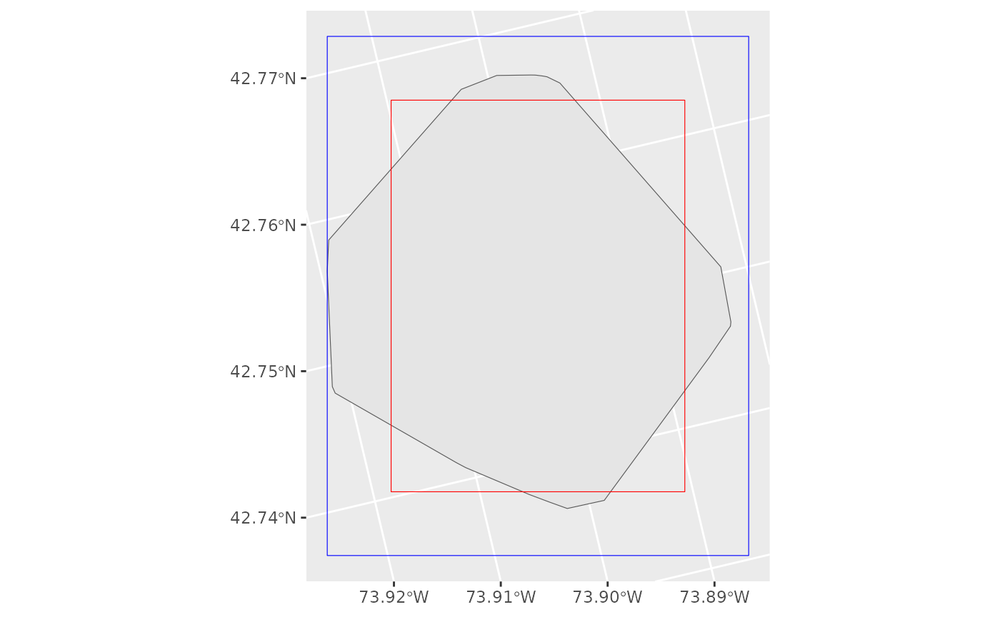

amt
vignettes/p2_hr.Rmd
p2_hr.RmdSeveral different indices have been proposed for measuring home-range overlap. These are reviewed by Fieberg & Kochanny (2005). There are two general approaches used to calculate home-range overlap: 1) calculate the percentage overlap at a given isopleth level (this works for geometric and probabilistic home ranges) or 2) calculate an index of similarity between the two utilization distributions (UD; this only works for probabilistic estimators)1.
amt
amt currently implements all methods to calculate
overlaps that were reviewed by Fieberg and Kochany (2005). These
are:
hr: That is the proportion of the home range of
instance
that overlaps with the home range of instance
.
This measure does not rely on a UD and is directional (i.e.,
)
and bound between 0 (no overlap) and 1 (complete overlap)phr: Is the probability of instance
being located in the home range of instance
.
phr is also directional and bounded between 0 (no overlap)
and 1 (complete overlap)vi: The volumetric intersection between two UDs.ba: The Bhattacharyya’s affinity between two UDs.udoi: A UD overlap index.hd: Hellinger’s distance between two UDs.These overlap indices can be calculated with the function
hr_overlap. The type of overlap measure an be controlled
with the argument type.
All of these estimators can be calculated for a given home-range
level (i.e., using conditional UDs). Whether or not a conditional
overlap is desired or not, can be controlled with the argument
conditional. For hr, the argument
conditional has no effect and the isopleths used for
home-range estimation will always be used for the overlap
calculation.
The function hr_overlap() can also be provided with a
list of home-range estimates in situations when overlap between many
different instances are required. Currently, there are three options for
calculating overlap among multiple instances: which = "all"
calculates overlap for each pair of home ranges,
which = "one_to_all" calculates overlap between the first
element in the list and all others, and
which = "consecutive" will calculate overlap between
consecutive elements in the list.
First we need to load the required packages:
We will use tracking data from Fishers from New York State, USA.
Create a template raster for the KDE
trast <- make_trast(amt_fisher |> filter(name %in% c("Leroy", "Lupe")), res = 50)And estimate home-ranges for both fishers
hr_leroy <- hr_kde(leroy, trast = trast, levels = c(0.5, 0.9))
hr_lupe <- hr_kde(lupe, trast = trast, levels = c(0.5, 0.9))hr and phr are directional, this means the
order matters. For all other overlap measures the order does not
matter.
hr_overlap(hr_leroy, hr_lupe, type = "hr") ## # A tibble: 2 × 2
## levels overlap
## <dbl> <dbl>
## 1 0.9 0.309
## 2 0.5 0.191
hr_overlap(hr_lupe, hr_leroy, type = "hr")## # A tibble: 2 × 2
## levels overlap
## <dbl> <dbl>
## 1 0.9 0.986
## 2 0.5 0.574By default conditional = FALSE and the full UD is
used.
hr_overlap(hr_leroy, hr_lupe, type = "phr", conditional = FALSE) ## # A tibble: 1 × 2
## levels overlap
## <dbl> <dbl>
## 1 1 1
hr_overlap(hr_lupe, hr_leroy, type = "phr", conditional = FALSE)## # A tibble: 1 × 2
## levels overlap
## <dbl> <dbl>
## 1 1 0.736If we set conditional = TRUE, the overlap is measured at
home-range levels that were specified during estimation.
hr_overlap(hr_leroy, hr_lupe, type = "phr", conditional = TRUE) ## # A tibble: 2 × 2
## levels overlap
## <dbl> <dbl>
## 1 0.5 0.580
## 2 0.9 0.992
hr_overlap(hr_lupe, hr_leroy, type = "phr", conditional = TRUE)## # A tibble: 2 × 2
## levels overlap
## <dbl> <dbl>
## 1 0.5 0.221
## 2 0.9 0.401Note, for the remaining overlap measures the order does not matter.
Below we show this for the volumnic intersection
(type = "vi") as an example.
hr_overlap(hr_lupe, hr_leroy, type = "vi", conditional = FALSE)## # A tibble: 1 × 2
## levels overlap
## <dbl> <dbl>
## 1 1 0.439
hr_overlap(hr_leroy, hr_lupe, type = "vi", conditional = FALSE)## # A tibble: 1 × 2
## levels overlap
## <dbl> <dbl>
## 1 1 0.439Lets calculate daily ranges for Lupe and then and then see how different ranges overlap with each other.
We have to use the same template raster in order to make ranges comparable.
trast <- make_trast(lupe, res = 50)Then we add a new column with day and calculate for each day a
KDE home range.
dat <- lupe |>
mutate(week = lubridate::floor_date(t_, "week")) |>
nest(data = -week) |>
mutate(kde = map(data, hr_kde, trast = trast, levels = c(0.5, 0.95, 0.99)))Now we can use the list column with the home-range estimates to
calculate overlap between the different home-ranges. By default
which = "consecutive", this means for each list entry (=
home-range estimate) the overlap to the next entry will be
calculated.
hr_overlap(dat$kde, type = "vi")## # A tibble: 3 × 4
## from to levels overlap
## <int> <int> <dbl> <dbl>
## 1 1 2 1 0.0431
## 2 2 3 1 0.551
## 3 3 4 1 0.612This works as well, if we set conditional = TRUE:
hr_overlap(dat$kde, type = "vi", conditional = TRUE)## # A tibble: 9 × 4
## from to levels overlap
## <int> <int> <dbl> <dbl>
## 1 1 2 0.5 0
## 2 1 2 0.95 0.0264
## 3 1 2 0.99 0.0357
## 4 2 3 0.5 0.264
## 5 2 3 0.95 0.528
## 6 2 3 0.99 0.547
## 7 3 4 0.5 0.318
## 8 3 4 0.95 0.592
## 9 3 4 0.99 0.608Sometimes it can be useful to provide meaningful labels. We can do
this with the labels argument.
hr_overlap(dat$kde, type = "vi", labels = dat$week)## # A tibble: 3 × 4
## from to levels overlap
## <chr> <chr> <dbl> <dbl>
## 1 2010-12-12 2010-12-19 1 0.0431
## 2 2010-12-19 2010-12-26 1 0.551
## 3 2010-12-26 2011-01-02 1 0.612Different options exist for the argument which. For
example, which = "one_to_all" calculates the overlap
between the first and all other home ranges.
The function hr_overlap_feature allows to calculate
percentage overlap
(
index) between a home. To illustrate this feature, we will use again the
data from lupe and calculate the intersection with an
arbitrary polygon.
poly <- amt::bbox(lupe, buffer = -500, sf = TRUE)
poly1 <- amt::bbox(lupe, sf = TRUE)
hr <- hr_mcp(lupe)
ggplot() + geom_sf(data = hr_isopleths(hr)) +
geom_sf(data = poly, fill = NA, col = "red") +
geom_sf(data = poly1, fill = NA, col = "blue")
hr_overlap_feature(hr, poly, direction = "hr_with_feature")## # A tibble: 1 × 3
## from to overlap
## <dbl> <int> <dbl>
## 1 0.95 1 0.828
hr_overlap_feature(hr, poly1, direction = "hr_with_feature")## # A tibble: 1 × 3
## from to overlap
## <dbl> <int> <dbl>
## 1 0.95 1 1.000
hr_overlap_feature(hr, poly, direction = "feature_with_hr")## # A tibble: 1 × 3
## from to overlap
## <int> <dbl> <dbl>
## 1 1 0.95 0.854
hr_overlap_feature(hr, poly1, direction = "feature_with_hr")## # A tibble: 1 × 3
## from to overlap
## <int> <dbl> <dbl>
## 1 1 0.95 0.542The same work with several home-range levels:
hr <- hr_mcp(lupe, levels = c(0.5, 0.9, 0.95))
hr_overlap_feature(hr, poly, direction = "hr_with_feature")## # A tibble: 3 × 3
## from to overlap
## <dbl> <int> <dbl>
## 1 0.5 1 0.828
## 2 0.9 1 0.860
## 3 0.95 1 0.990
sessioninfo::session_info()## ─ Session info ───────────────────────────────────────────────────────────────
## setting value
## version R version 4.5.2 (2025-10-31)
## os Ubuntu 24.04.3 LTS
## system x86_64, linux-gnu
## ui X11
## language en
## collate C.UTF-8
## ctype C.UTF-8
## tz UTC
## date 2026-02-01
## pandoc 3.1.11 @ /opt/hostedtoolcache/pandoc/3.1.11/x64/ (via rmarkdown)
## quarto NA
##
## ─ Packages ───────────────────────────────────────────────────────────────────
## package * version date (UTC) lib source
## amt * 0.3.1.0 2026-02-01 [1] local
## backports 1.5.0 2024-05-23 [1] RSPM
## bslib 0.10.0 2026-01-26 [1] RSPM
## cachem 1.1.0 2024-05-16 [1] RSPM
## checkmate 2.3.3 2025-08-18 [1] RSPM
## class 7.3-23 2025-01-01 [3] CRAN (R 4.5.2)
## classInt 0.4-11 2025-01-08 [1] RSPM
## cli 3.6.5 2025-04-23 [1] RSPM
## codetools 0.2-20 2024-03-31 [3] CRAN (R 4.5.2)
## DBI 1.2.3 2024-06-02 [1] RSPM
## desc 1.4.3 2023-12-10 [1] RSPM
## digest 0.6.39 2025-11-19 [1] RSPM
## dplyr 1.1.4 2023-11-17 [1] RSPM
## e1071 1.7-17 2025-12-18 [1] RSPM
## evaluate 1.0.5 2025-08-27 [1] RSPM
## farver 2.1.2 2024-05-13 [1] RSPM
## fastmap 1.2.0 2024-05-15 [1] RSPM
## fs 1.6.6 2025-04-12 [1] RSPM
## generics 0.1.4 2025-05-09 [1] RSPM
## ggforce 0.5.0 2025-06-18 [1] RSPM
## ggplot2 * 4.0.1 2025-11-14 [1] RSPM
## ggraph * 2.2.2 2025-08-24 [1] RSPM
## ggrepel 0.9.6 2024-09-07 [1] RSPM
## glue 1.8.0 2024-09-30 [1] RSPM
## graphlayouts 1.2.2 2025-01-23 [1] RSPM
## gridExtra 2.3 2017-09-09 [1] RSPM
## gtable 0.3.6 2024-10-25 [1] RSPM
## htmltools 0.5.9 2025-12-04 [1] RSPM
## htmlwidgets 1.6.4 2023-12-06 [1] RSPM
## igraph 2.2.1 2025-10-27 [1] RSPM
## jquerylib 0.1.4 2021-04-26 [1] RSPM
## jsonlite 2.0.0 2025-03-27 [1] RSPM
## KernSmooth 2.23-26 2025-01-01 [3] CRAN (R 4.5.2)
## knitr 1.51 2025-12-20 [1] RSPM
## lattice 0.22-7 2025-04-02 [3] CRAN (R 4.5.2)
## lifecycle 1.0.5 2026-01-08 [1] RSPM
## lubridate 1.9.4 2024-12-08 [1] RSPM
## magrittr 2.0.4 2025-09-12 [1] RSPM
## MASS 7.3-65 2025-02-28 [3] CRAN (R 4.5.2)
## Matrix 1.7-4 2025-08-28 [3] CRAN (R 4.5.2)
## memoise 2.0.1 2021-11-26 [1] RSPM
## pillar 1.11.1 2025-09-17 [1] RSPM
## pkgconfig 2.0.3 2019-09-22 [1] RSPM
## pkgdown 2.2.0 2025-11-06 [1] any (@2.2.0)
## polyclip 1.10-7 2024-07-23 [1] RSPM
## proxy 0.4-29 2025-12-29 [1] RSPM
## purrr 1.2.1 2026-01-09 [1] RSPM
## R6 2.6.1 2025-02-15 [1] RSPM
## ragg 1.5.0 2025-09-02 [1] RSPM
## rbibutils 2.4.1 2026-01-21 [1] RSPM
## RColorBrewer 1.1-3 2022-04-03 [1] RSPM
## Rcpp 1.1.1 2026-01-10 [1] RSPM
## Rdpack 2.6.5 2026-01-23 [1] RSPM
## rlang 1.1.7 2026-01-09 [1] RSPM
## rmarkdown 2.30 2025-09-28 [1] RSPM
## S7 0.2.1 2025-11-14 [1] RSPM
## sass 0.4.10 2025-04-11 [1] RSPM
## scales 1.4.0 2025-04-24 [1] RSPM
## sessioninfo 1.2.3 2025-02-05 [1] RSPM
## sf 1.0-24 2026-01-13 [1] RSPM
## survival 3.8-3 2024-12-17 [3] CRAN (R 4.5.2)
## systemfonts 1.3.1 2025-10-01 [1] RSPM
## terra 1.8-93 2026-01-12 [1] RSPM
## textshaping 1.0.4 2025-10-10 [1] RSPM
## tibble 3.3.1 2026-01-11 [1] RSPM
## tidygraph * 1.3.1 2024-01-30 [1] RSPM
## tidyr 1.3.2 2025-12-19 [1] RSPM
## tidyselect 1.2.1 2024-03-11 [1] RSPM
## timechange 0.4.0 2026-01-29 [1] RSPM
## tweenr 2.0.3 2024-02-26 [1] RSPM
## units 1.0-0 2025-10-09 [1] RSPM
## utf8 1.2.6 2025-06-08 [1] RSPM
## vctrs 0.7.1 2026-01-23 [1] RSPM
## viridis 0.6.5 2024-01-29 [1] RSPM
## viridisLite 0.4.2 2023-05-02 [1] RSPM
## withr 3.0.2 2024-10-28 [1] RSPM
## xfun 0.56 2026-01-18 [1] RSPM
## yaml 2.3.12 2025-12-10 [1] RSPM
##
## [1] /home/runner/work/_temp/Library
## [2] /opt/R/4.5.2/lib/R/site-library
## [3] /opt/R/4.5.2/lib/R/library
## * ── Packages attached to the search path.
##
## ──────────────────────────────────────────────────────────────────────────────For a discussion of geometric vs. probabilistic estimators see here: https://peerj.com/articles/11031/↩︎